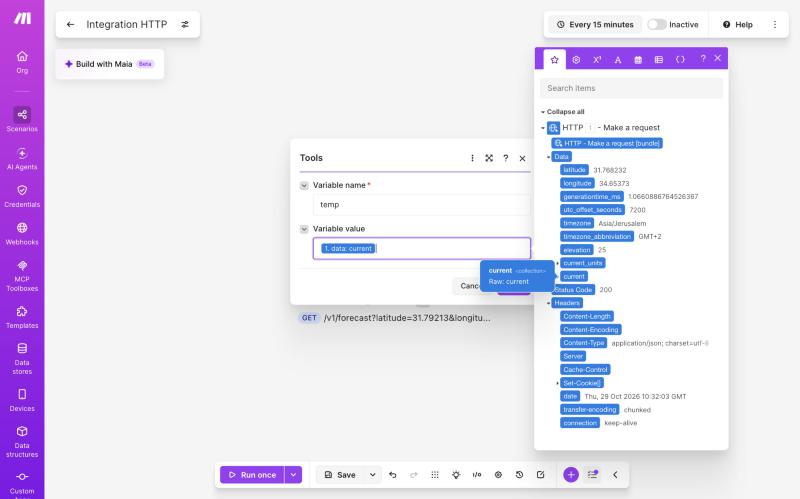
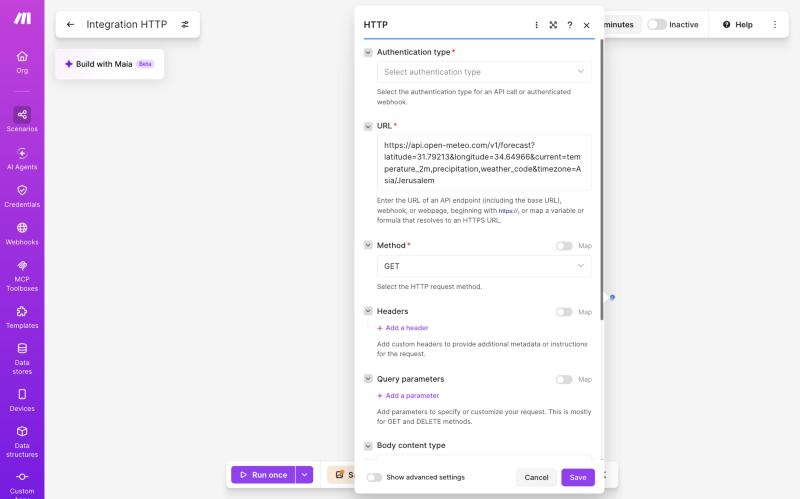
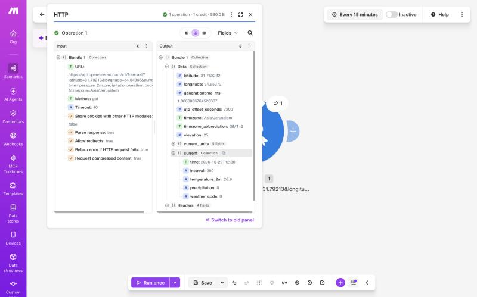
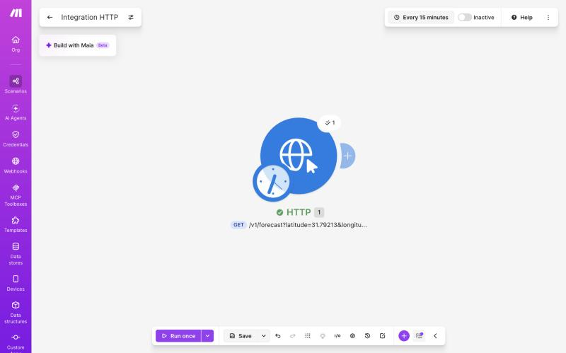
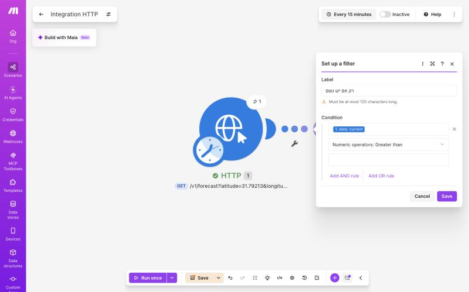
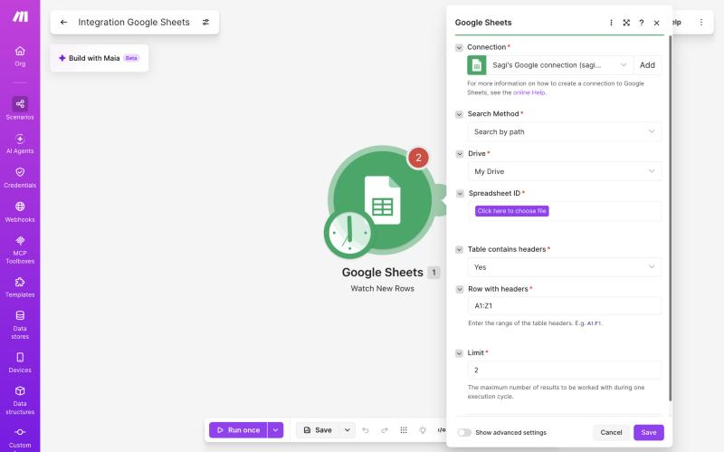
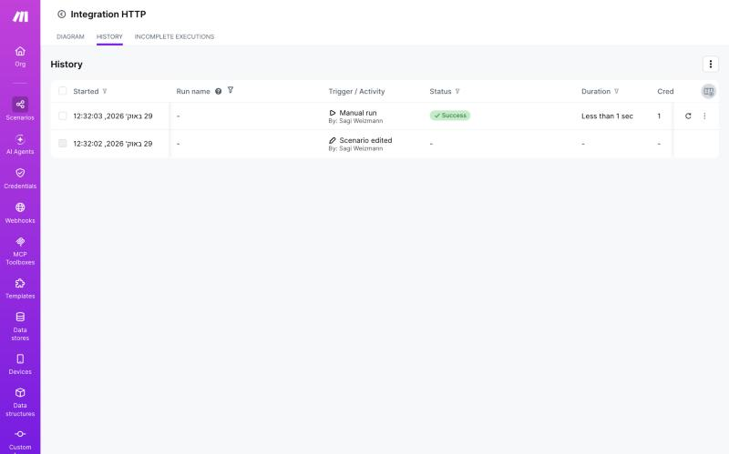

במפגש הקודם הבנו איך מערכות מדברות — JSON, API, Webhooks. היום בונים בידיים: Make מושך מידע מ-API ושולח אותו לבד. בלי Claude עדיין — רק אוטומציה טהורה.
שתי דקות לרענן את המושגים ממפגש 2, לפני שנפתח את Make.
{ }. מגיעים לערך לפי הנתיב שלו.ארבע מילים שצריך להכיר לפני הבנייה: תרחיש, מודול, חיבור, מיפוי.
{{current.temperature_2m}} ביד כטקסט. זה לא עובד! צריך לבחור את השדה מהרשימה, כדי ש-Make יכניס את הערך האמיתי.
Schedule → HTTP → שליחה. בונים ביחד, מודול אחרי מודול. פתחו את Make.

לוחצים Run once, פותחים את ה-Output ומרחיבים את current — רואים את השדות האמיתיים:

{{now}}temperature_2mprecipitation
כשחוזרים: הופכים את האוטומציה לחכמה יותר — פילטר שמחליט מתי לשלוח, טריגר אירוע, ודיבוג כשמשהו נשבר.
הופכים את התרחיש לחכם יותר — ולומדים מה עושים כשמשהו נשבר.
precipitation Greater than 0precipitation = 0 → התנאי לא מתקיים → המייל לא נשלח. יש גשם → ממשיך רגיל.

כל הרצה נשמרת. לוחצים על הרצה, ואז על כל מודול — רואים מה נכנס ומה יצא. שם מתגלות כמעט כל התקלות.
{{temperature_2m}} במקום מספר → השדה הוקלד ולא נבחר, או Parse = No.
בנינו אוטומציה שמזיזה נתונים. עכשיו — איפה ה-AI נכנס, ומה נכין לשיעור הבא.
כל אחד מריץ אוטומציה משלו, ומגיש.
תודה! בניתם את האוטומציה הראשונה שלכם. בשיעור הבא — מוסיפים את Claude.